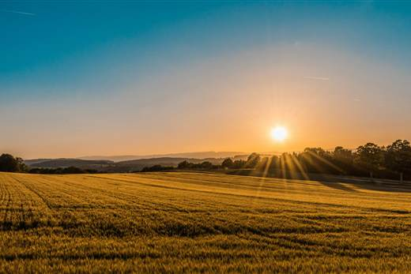
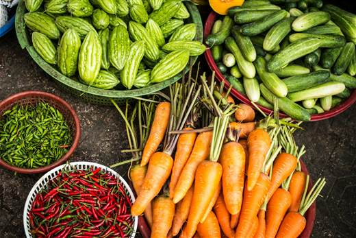
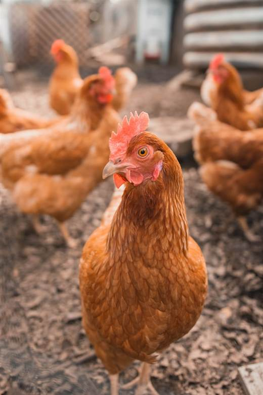

Farm management and accounting software.
Farming Ledger gives South African growers and livestock teams one workspace for finances, invoices, inventory, crops, cattle, sheep, pigs, poultry, harvests, staff, reports, feed, and daily farm records.

Crop planningTrack planting, inputs, soil tests, harvests, and field performance from one record trail.

Harvest recordsKeep production, sales, inventory, and daily work connected to your finances.

Livestock and poultryFollow groups, houses, feed, health, movement, births, mortality, production, purchases, and sales.
About Farming Ledger
Farm accounting, land, crops, animals, people, and reports in one app.
Farm accounting
Keep income, expenses, quotes, invoices, stock costs, salaries, commissions, cash, bank balances, and operating reports linked to farm activity.
Property and fields
Map multiple properties, fields, blocks, camps, buildings, dams, boreholes, and roads, then keep one history for everything that happens there.
Crops and soil
Record seedling and planting batches, soil tests, inputs, cultivation, harvests, storage, sales, and success by crop, block, or season.
Livestock and poultry
Manage cattle, sheep, goats, pigs, and poultry with group, scan, feed, health, breeding, movement, production, purchase, sale, and cost records.
One connected farm record
Built around the way South African farms actually operate.
Farming Ledger connects operational records to the people, places, animals, crops, stock, and money behind them. A field, building, livestock group, task, sale, or invoice is recorded once and reused wherever it belongs.
Production, purchases, sales, quotes, invoices, expenses, inventory, and monthly performance stay in one traceable workspace.
Properties and mapped features form the shared location record used by crops, grazing, poultry, pigs, soil tests, maintenance, and tasks.
Owners choose staff access, assign work, receive completion notes, and keep the work history after a staff member leaves.
Use the same account on Android, Windows, Linux, iPhone or iPad through the web app, and any modern web browser.